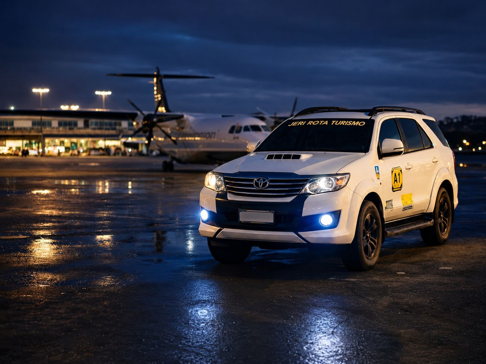
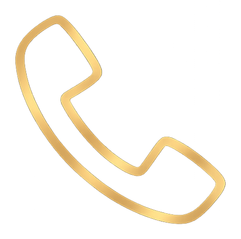
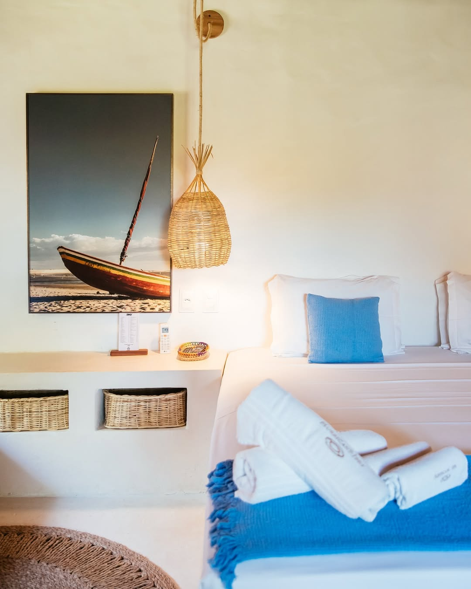

Exclusividad, cuidado, fluidez
Un viaje bien guiado desde el primer contacto
En Jericoacoara, los mejores días comienzan antes de la llegada. Jeri Rota organiza traslados, paseos y hospedaje con atención directa, curaduría local y cuidado en los detalles para que tu experiencia sea más ligera, segura y bonita de principio a fin. Cada elección está pensada para unir comodidad, claridad y el ritmo adecuado para vivir Jeri sin prisa.
Reservas

(88) 98227-4666
Servicios
Experiencias principales

Hospedaje
Hospedaje en Jericoacoara
Jeri Rota te ayuda a elegir hospedaje en Jericoacoara de acuerdo con tu perfil, presupuesto y estilo de viaje. Ubicación, comodidad y atmósfera se piensan en conjunto para que la estadía complete la experiencia del viaje.
Consultar hospedaje
El cuidado
Detalles que hacen el viaje más ligero
Desde el primer contacto hasta el regreso, cada etapa se guía para que vivas Jericoacoara con más comodidad, claridad y tranquilidad.
Atención directa
Hablas con quien conoce la ruta y acompaña tu viaje de cerca.
Rutas personalizadas
Itinerarios pensados para combinar con tu tiempo y tu estilo.
Hospedajes seleccionados
Opciones alineadas con tu perfil, comodidad y ubicación deseada.
Traslados con comodidad
Llegada más fluida, con seguridad y atención a los horarios.
Experiencias locales
Vivencias que te acercan a lo mejor de Jericoacoara.
Apoyo en cada etapa
Orientación antes, durante y después para que el viaje siga ligero.


Ademilson Souza Prado
Hace 7 meses
Viajar con Jeri Rota fue mi mejor elección, porque me sorprendió positivamente la atención especial que recibí de todo el equipo.

Marcelo Alvim
Hace 7 meses
¡Muy buen servicio! El conductor Adriano fue muy atento. Informó los destinos y explicó todo con precisión. Lo recomiendo.

Rafaela Adriane
Hace 7 meses
Fueron paseos excelentes, guías puntuales y vehículos muy cómodos. Lo recomiendo mucho.
Transfer Jericoacoara
Llegar bien cambia todo el viaje
Desde el aeropuerto hasta Jeri, cada detalle cuenta. Jeri Rota organiza tu traslado con comodidad, seguridad y acompañamiento directo para que el viaje empiece ligero desde el primer trayecto.
Saber más
Simplemente Jeri
Jericoacoara
Jericoacoara es un lugar para vivir intensamente — amar, sonreír y reencontrarse. Un pueblo mágico, vibrante y lleno de energía, donde cada momento se transforma en un recuerdo inolvidable.